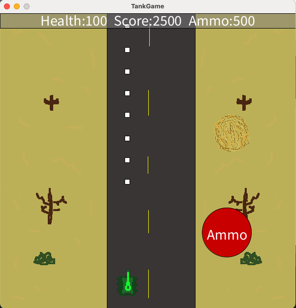

Typing Results

Coding Projects

This timeline shows Micheal Phelps' career and main achievements. Starting at a young age Micheal Phelps was a prodigy and at the age of 15 he went to the 2000 olympics in Sydney and then later that year he broke the 200 meter fly when he was only 15.
Link to CodeShapeGame
This game is coded using the processing app throught the java type of code and the objects were made in Pixler. This game is played by moving the smiley face to the rock before the rock dissapears. It is scored according to how long you take to get to the rock.
 Link to Code
Link to Code
MiniProject
The game I designed was a duck simulator that dives down and trys to catch the fish that is beneath the water which is following your mouse. Clicking the mouse makes the duck dive down underneath the water.

Link to Code
Timer
The timer project features a 10 second timer that counts down and plays a sound once it reaches 0. The three buttons: Start, Stop, and Reset that change colors once toggled and can stop, Start, and Reset the Timer.
 Link to Code
Link to Code
Echtch-a-sketch
The Echtch-a-sketch project is a traditional echtch-a-sketch game where you can draw lines to make an image using WASD in orange font with a light grey background.
 Link to Code
Link to Code
TankGame
This game was the final project for the Exploring Computer Science class. This project has a moving tank that is viewed as a top down view, that can rotate by using WASD. The tank shoots projectiles that can hit the obstacle which is a tumbleweed which fits in with the desert setting. Along with the moving projectiles, there are buffs/upgrades susch as ammo and health boosts.

Link to Code